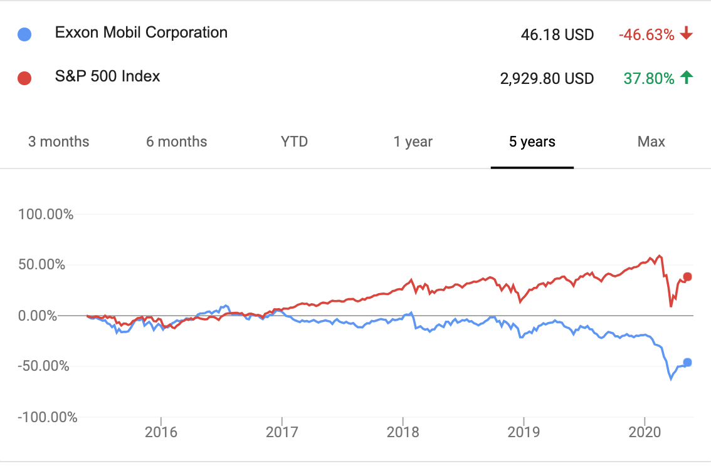

May 2020
Finally some good news on the climate change front. Wall Street has emerged as a suprising ally to help combat climate change. This article presents their two major strategies which have both achieved remarkable results, and how we can help as individual investors.
Under the divestment strategy, investors sell off shares of companies that are contributing to the climate crisis, and thereby “punish” these companies by driving down their stock price.
The charm of divestment is that it is also practical. Even if an investor has no ethical qualms about companies contributing to climate change, it is a bad investment to invest in industries made obsolete by the Paris Agreement. In fact, the traditional energy sector has greatly underperformed the overall market in the last several years.
Divestment seems to be working. Most financial analysts now perceive the oil industry as risky, saying
“There’s just this hate for this commodity right now,” said Bernstein analyst Bob Bracket, according to the FT. “They don’t want it in the short-run due to the price swings seen in recent years. And in the long-run there are fears about how these companies look in a decade’s time, if the energy transition gathers pace.”
Quote from oilprice.com
And it seems that Wall Street banks indeed avoid investments in fossil fuels, much to the ire of some Congress members. Regardless of whether investors avoid fossil fuels out of good citizenship or the inherent riskiness of these assets, divestment is a win-win strategy on both fronts.
It’s not just Exxon Mobil! Divestment makes sense. Every traditional energy company underperformed the S&P average in the last 5 years.
While divestment makes headway, there are some critics. William Macaskill of the Effective Altruism community argues that good actors divesting their shares may mean that these problematic companies would increasingly be owned by bad actors, who could worsen the state of the world.
By this argument, perhaps good investors could purchase problematic companies and influence them for the better? Activist investors are trying exactly this idea, which is called engagement. These investors become part-owners through purchasing stock, and use their shareholder voting power to institute policies good for the environment.
When I first learned of engagement, I was skeptical. I wondered whether engagement was just lip service from investors to continue funding the status quo. After some research, I’m pleased to report that engagement seems to have produced some major changes in how companies operate.
Climate Action 100+ represents 450+ investors managing $40T+ in assets
The most famous group of investors doing engagement is the Climate Action 100+. In the time since Betty Yee launched the initiative in late 2017, they have formed a coalition of activist investors with $40T+ assets under management (for scale, the world stock market at the end of 2019 was valued at $70T). The investors target the 100 companies responsible for 66% of world emissions, through mining, oil and gas, transportation, utilities, industrials, and consumer products.
Through engagement led by the Climate Action 100+, problematic companies are divesting their own carbon intensive assets. For instance, British Petroleum shareholders passed a resolution where BP is now legally obligated to reject projects that are unprofitable in a low carbon world. This greatly caps the number of new wells that can be drilled.
In another win, Shell has agreed to cut the average carbon footprint of products sold in half by 2050, by investing more in biofuels and clean energy. Coal mining company Glencore came out voluntarily capping coal output at its current levels.
Climate Action 100+ is getting these wins by working within the structure of existing companies, using business logic, shareholder votes, and incentives like executive compensation. These interventions work quickly through the language of money.
Divestment and engagement seem like opposites. How can an individual investor choose the right strategy for themselves?
The short answer is that in order to seriously engage with companies, an investor needs sufficient size. If you belong to a larger plan (e.g. your company’s retirement plan), you could circulate a petition within your company to have your larger plan join Climate Action 100+. For instance, financial services provider Blackrock recently joined CA100+ due to customer pressure, saying,
“Climate change is almost invariably the top issue that clients around the world raise with BlackRock.” - Laurence D. Fink, CEO of BlackRock
Vanguard, a provider for many corporate retirement plans and popular creator of many index funds is conspicuously absent from the CA100+. If Vanguard manages your money or you invest in Vanguard index funds, write to them and ask them to join CA100+. Getting Vanguard to join CA100+ would be a huge win for the planet! Financier Matt Levine theorizes that it is good for business too.
Regardless of size, every investor can divest. In addition to being good for the environment, it decreases your exposure to risky and underperforming companies. But divestment is trickier in the age of index fund investing, where many individual investors purchase index funds rather than direct stocks.
To use an index fund approach while divesting from problematic industries, investors can search for “ESG index funds”. ESG stands for “environmental, social, governance”, meaning that the companies in these indices have been prescreened to have favorable environmental, social, and governance policies. These index funds have lower liquidity and slightly higher expense ratios than more popular index funds, but the differences should decrease if we can increase the popularity of ESG funds. Interestingly, ESG funds have greatly outperformed the overall market during the coronavirus pandemic.
Another approach may be to purchase indices for sectors that are environmentally friendly. For instance, the technology sector is relatively environmentally friendly and many companies have already gone carbon neutral and carbon negative. The QQQ ETF which primarily follows the technology sector has a low expense ratio and very good liquidity since it is one of the top 5 most popular ETFs. The downside of QQQ is that it is overexposed to the tech industry, although it does have ~25% net exposure to healthcare and consumer companies as well. QQQ has also greatly outperformed the overall market during the coronavirus pandemic, again demonstrating that divestment may be both kind and practical.
Too much climate change news is depressing. Let’s focus on solutions that are working and scale them up. Are there any other strategies that are already working? Discuss on HackerNews.
Thanks Gerardo Flores for pushing back on divestment, and Zoe Samuel for amazing edits. Matt Holden, David Westbrook, Corinna Pan, James Novak, Shane McDaniel, Ben Mathes, Austin Lee, and Dandelion Mane strengthened the piece through their feedback.